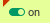
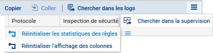

Fiche 06 -- Configuration du NAT/PAT
Dans les pare-feu SNS, les règles de filtrage et NAT
(traduction d'adresses) sont regroupées sous une même politique. Il est
possible de définir 10 politiques différentes mais une seule politique
est active à la fois, identifiée par l'icône  :
:
Mise en œuvre du NAT dynamique
NAT dynamique
La règle de NAT dynamique NAPT permet aux machines du réseau interne (Network_internals) d'accéder au réseau externe (Network_Out) et à Internet
La règle de NAT dynamique est créée avec le bouton Nouvelle règle / règle de partage d'adresse source (masquerading) qui ajoute automatiquement la plage de ports prédéfinie ephemeral_fw [20000-59999] au niveau du port source dans le trafic après traduction. Par défaut, les ports sont choisis séquentiellement dans cette plage, cependant une option est disponible pour permettre un choix aléatoire du numéro de port pour chaque nouvelle connexion et le rendre ainsi moins prédictible.
- Dans votre politique (10), sélectionner l'onglet NAT puis Nouvelle règle / règle de partage d'adresse source (masquerading)

Une nouvelle règle non activée apparaît avec des valeurs par défaut any, any. Dans la section Trafic après translation, le port source sera traduit par un numéro de port choisi dans la plage ephemeral_fw.
La configuration du Trafic original (avant translation) permet de renseigner les valeurs des paramètres avant traduction (par défaut any, any) :
- Source permet de définir l'adresse IP d'un hôte ou du réseau source ;
- Destination permet de définir l'adresse IP d'un hôte ou du réseau destination.
La configuration du Trafic après translation permet de renseigner les nouvelles valeurs des paramètres après traduction (par défaut any, any) :
- Source définit l'adresse IP ou le réseau source et le port source vus de l'extérieur.
- Destination définit l'adresse IP ou le réseau destination et Port destination translatée le port de destination.
Pour configurer un NAT/PAT pour permettre la sortie sur Internet
- Double-cliquer sur une zone vide de la règle pour ouvrir la fenêtre de configuration détaillée « Edition de la règle N°1 ».
- Cliquer l'onglet du menu de gauche Général, dans la zone Commentaire, saisir un commentaire, par exemple « Configuration de la règle de NAT/PAT pour la sortie internet ».
- Cliquer sur l'onglet du menu de gauche Source Originale.
- Double-cliquer sur Any et avec la flèche choisir Network_internals (qui renvoie à tous les réseaux internes protégés), dans l'onglet Configuration avancée, laissez Any pour le port de destination.
- Cliquer sur l'onglet du menu de gauche Destination originale.
- Double-cliquer sur Any et avec la flèche choisir Internet, laissez Any pour le port de destination.

Attention
Attention : si dans la zone destination originale, vous laissez Any, plutôt qu'Internet qui désigne tous les réseaux sauf ceux internes au pare-feu SNS, le pare-feu SNS bloquera les flux d'administration (en ssh et en https). En effet, les flux d'administration subiront également une traduction NAT vers l'interface OUT qui l'interprétera comme une tentative d'intrusion et les bloquera.
Solution
Vous pouvez rendre cette règle plus restrictive en choisissant explicitement l'interface de sortie.
- Cliquer sur l'onglet Configuration avancée et sélectionnez out dans Interface de sortie.
- Cliquer sur l'onglet Source translatée et sélectionner Firewall_Out dans Machine source translatée.
- Dans Port source translaté, laisser ephemeral_fw et cocher choisir aléatoirement le port source translaté.
Information importante
Cette option choisit aléatoirement le port source translaté, ce qui permet d'éviter les attaques utilisant la prédictibilité des ports utilisés. Ainsi si le premier port est 10000, le suivant ne sera pas 10001. Cette précaution n'empêche pas les attaques, elle permet de les rendre plus complexes.

- Cliquer l'onglet du menu de gauche Protocole, cela permet de définir le type de protocole : applicatif, IP ou Ethernet, laisser Détection automatique du protocole (par défaut)
- Cliquer sur l'onglet du menu de gauche Options, cela permet de tracer le trafic qui correspond à la règle de traduction dans le journal de connexions, choisir tracer.

Nota Bene
NB : Le NAT ne laisse jamais de traces dans le journal de connexions. Pour tracer une règle de NAT, il faut choisir l'option « tracer », sinon, aucune journalisation de NAT ne sera effectuée.

- Cliquer sur OK pour sauvegarder les modifications de la règle de NAT dynamique que vous venez de créer.
-
Dans la colonne État, sélectionner avec la flèche Définir l'état on 
-
Cliquer sur Appliquer puis Oui, Activer la politique puis confirmer.
Dans la liste des règles la barre devient verte quand les règles s'appliquent et une info-bulle indique le nombre de fois où la règle a été appliquée :
- Dans le bandeau d'affichage des règles, déplier le menu et cliquer sur Réinitialiser les statistiques des règles pour remettre les compteurs à zéro.

Mise en œuvre du NAT statique par port (redirection de port)
Pour faire une redirection NAT « classique », il faut sélectionner l'onglet NAT puis Nouvelle règle / règle simple.
Exemple avec une règle de NAT afin qu'unserveur WEB (objet srv_web_priv, protocole http) soit joignable grâce à une redirection de port via l'adresse IP publique OUT d'un pare-feu: « 192.36.253.70 ».
-
Source originale = Internet, Interface d'entrée = out
-
Destination originale = Firewall_Out, Port dest= http
-
Source translatée = Any (ou pas de source)
-
Destination translatée = srv_web_priv, Port destination translaté = none
- Cliquer Appliquer puis Oui, Activer la politique puis confirmer.
Le détail ci-dessous :
- Dans l'onglet Destination de la règle de filtrage, choisissez l'onglet Configuration avancée, puis dans NAT sur la destination, sélectionner l'objet correspondant à votre serveur web privé :
- Puis dans l'onglet Port/Protocole, choisir http dans la zone Port destination translaté.

Traçage des règles de NAT
Activer le traçage des règles de NAT permet d'avoir les informations visibles dans les Journaux d'audit (logs).
- Double-cliquer sur la règle que vous voulez tracer et choisissez l'onglet Options, et dans niveau de trace tracer puis **OK. **
Vous pouvez tester l'accès à l'ensemble de vos ressources et vérifier le traçage des règles demandées dans les logs du pare-feu (journal standard et journal Filtrage).
- Cliquer sur l'onglet Monitoring puis LOGS - Journaux d'audit / Vues / Trafic réseau : vous devriez voir apparaître les traces :
Information importante
Il est également possible de réaliser une redirection de ports directement lors de la création d'une règle de filtrage (voir fiche 6). L'intérêt d'intégrer le filtrage et la redirection dans une règle unique est d'optimiser les performances puisque le pare-feu réalise un seul traitement au lieu de deux. Voici un exemple ci-dessous équivalent à la règle précédente :